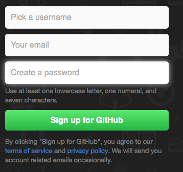
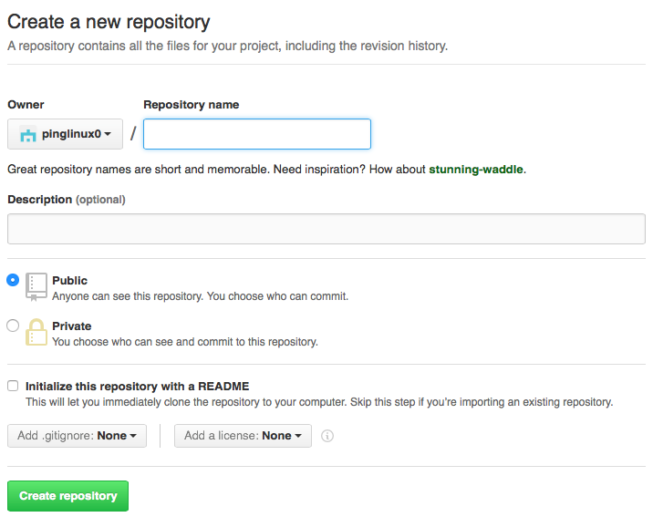
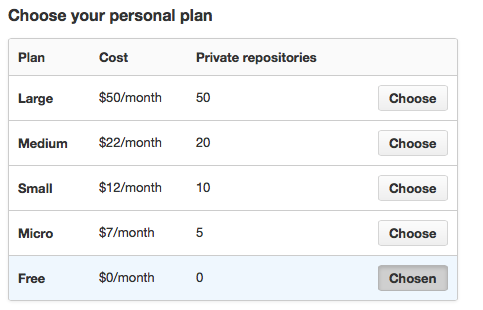

What is Git ?
Git is the open source version control software,which is mainly-used for source code management.it is similar to other version control software like subversion(svs), and mercurial.Git is command line tool and github is GUI.
Why used version control software ?
1) A version control system remembers the history of your files.
2)it helps to see the difference between two codes
3) it helps many users to work on the same code from different place and keeps the track of their work
4) it can roleback to any revision or comitted history.i.e you can go back to earlier stage
What is repository?
A repository is a central location where all the files for a particular project are stored, also called “repo.” Each project will have its own repo, and can be accessed by a unique URL.
Creating an acccount on Github.
Go to the url Github.com Fill out the information and hit sign up for github
Click on create repository and name it.We will store our code in this repo
Picking up a plan.Here, we will go with free one.
Installing git in your localmachine which is used to store and access our code from github.
Rehat/centosyum instal git
Mac gem install gitDownload Link